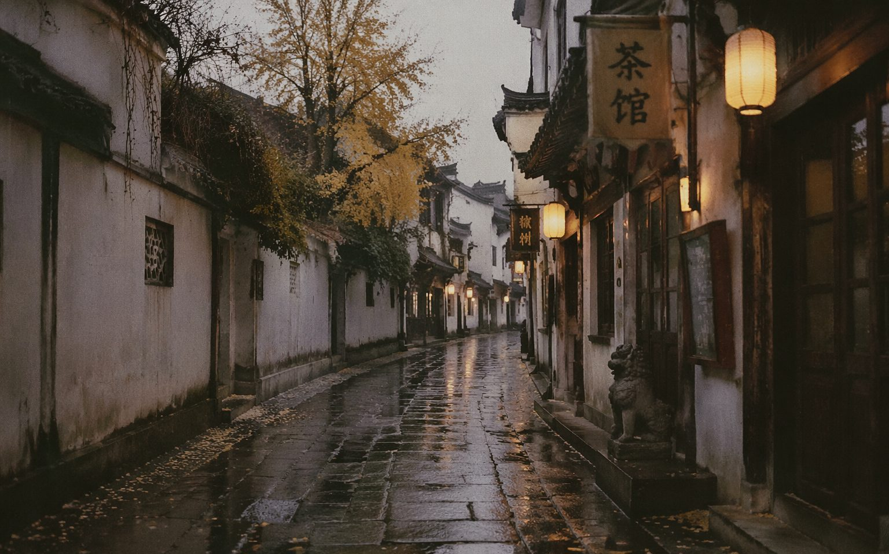

PHOTOS · 摄影
雨巷 · 石板路上的灯

南浔的傍晚，一场雨刚停。游客散尽，灯笼次第亮起来，湿的石板路把白墙、黛瓦、灯笼全复制了一遍，整条巷子变成上下两层的城。我沿着巷子来回走了三趟，等一个完全没有人的瞬间。
拍这张照片时，相机几乎贴地——我想让水面里的巷子占画面的一半。路过的本地人看我趴着，笑：「小伙子，地上凉。」我说马上好。他摇摇头走了，拖鞋声在巷子里啪嗒啪嗒，特别好听。
戴望舒的雨巷里有丁香一样的姑娘，我的雨巷里没有，只有灯笼和倒影。但我不觉得缺憾：有些巷子负责发生故事，有些巷子只负责美。回程的高铁上我把照片导出来，看了一遍又一遍——下次再去，也不知道灯笼还亮不亮，所以我把它留在这里了。
完